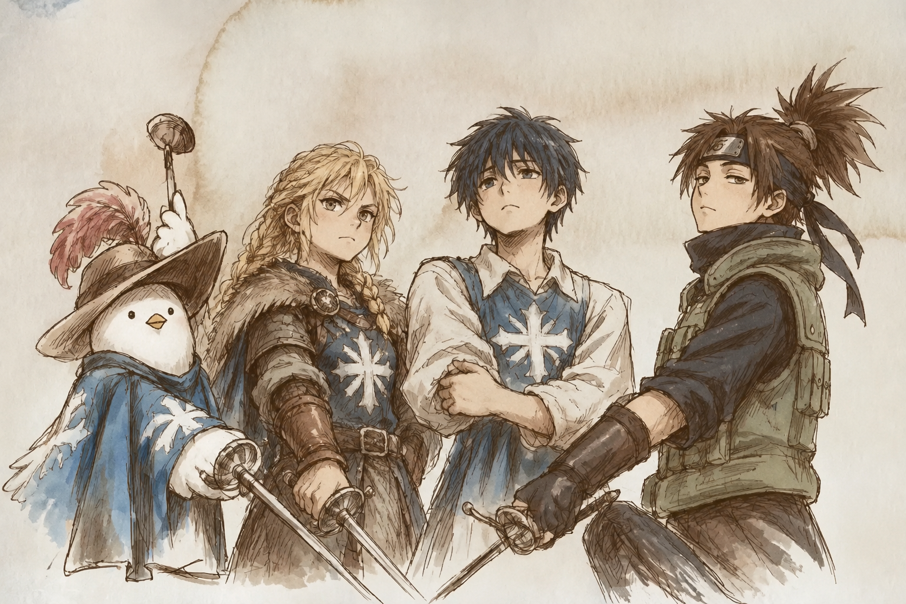
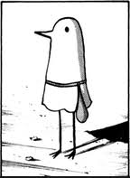
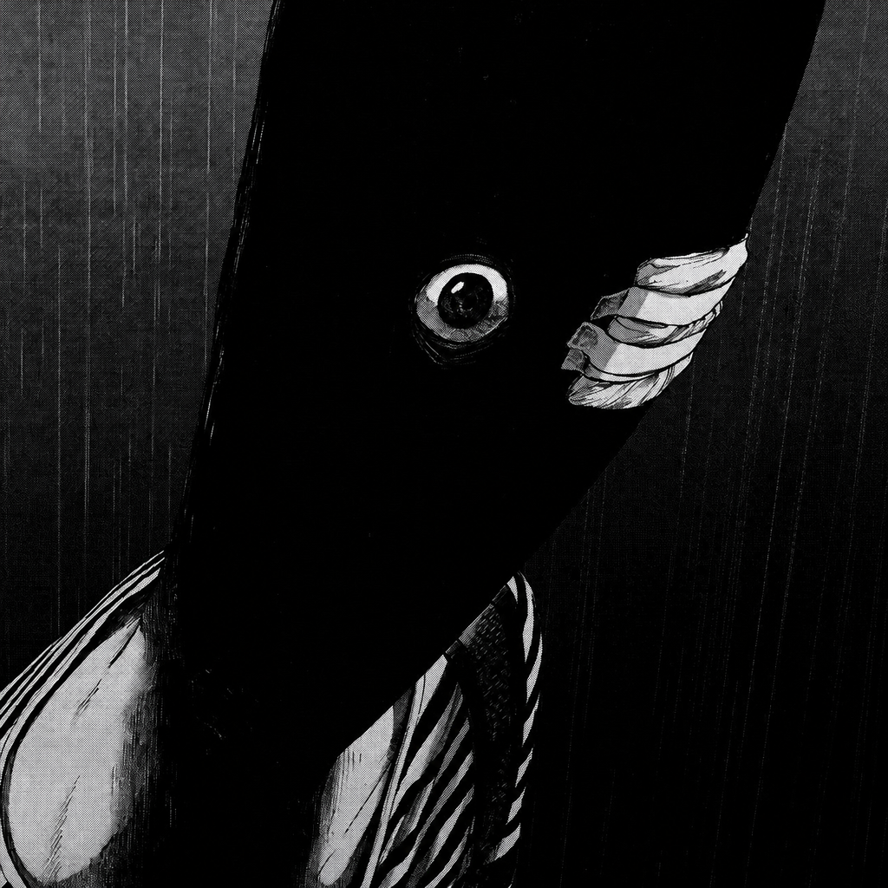
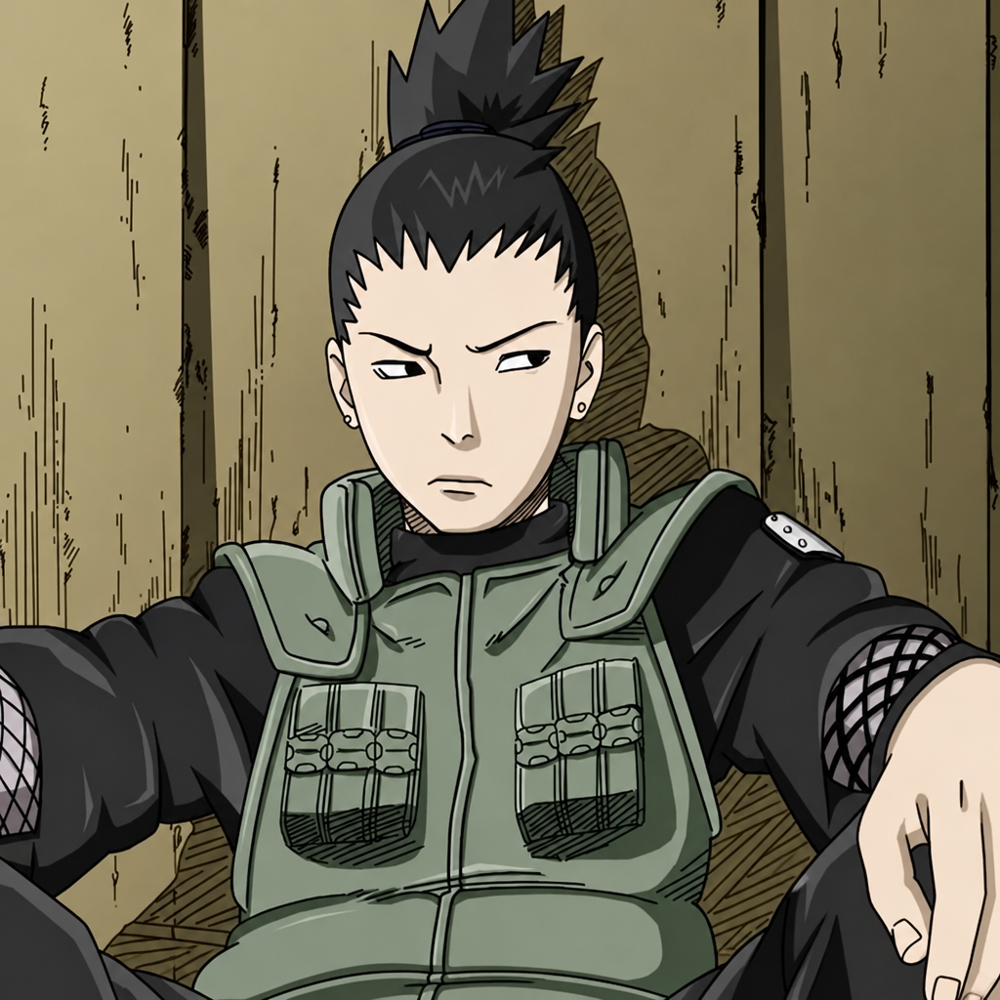
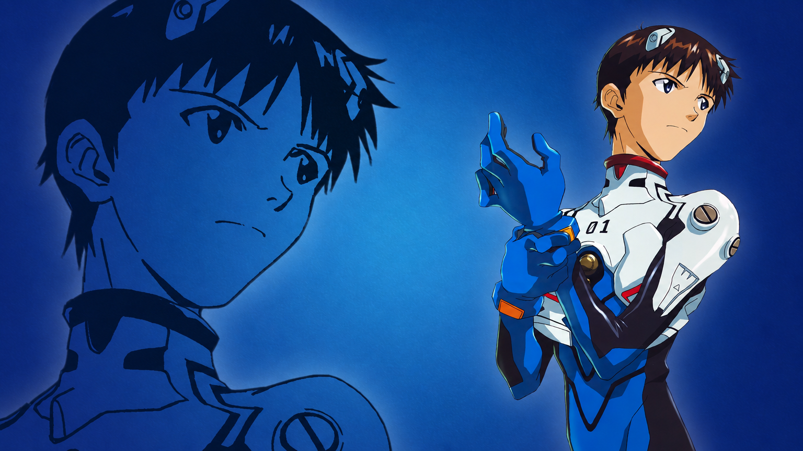
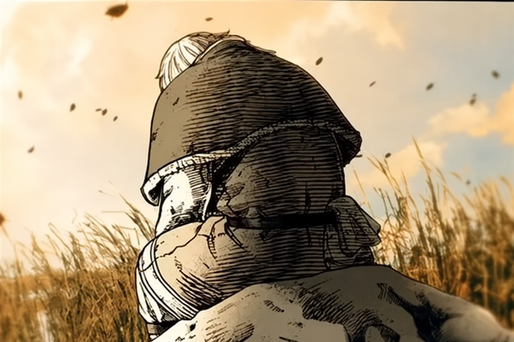
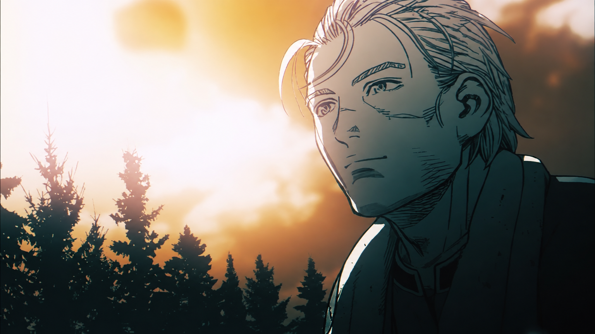

Conheça a história por tras dos 4 mosqueteiros de ADS
Conheça um pouco mais sobre os 4 mosqueteiros e suas histórias, características, interesses e participação na jornada de ADS.


Chegou sem saber o que era um commit, hoje abre pull request antes do café. Sua jornada começou no "Hello, World!" e seguiu por madrugadas de debug. Destemido diante de qualquer tela vermelha de erro.

Chegou sem saber muita coisa e hoje encara qualquer tela de erro sem piscar. Tem energia de sobra para recomeçar quantas vezes for preciso. Sua jornada é a de quem aprende na prática: erra, entende e corrige de maneira rápida e eficaz. Evolui constantemente.
Calmo como um servidor em produção, fala pouco e refatora muito. Aprendeu que todo bug tem uma origem, e que metade deles mora no próprio código. Sua jornada é a busca silenciosa pelo código limpo.

O gênio preguiçoso do grupo, mestre em dizer "que saco" antes de resolver tudo com um plano de QI 200. Modela banco de dados como quem joga xadrez, sempre cinco movimentos à frente. Sua jornada é a de quem finge que não se importa, mas é o primeiro a segurar o time quando o prazo aperta.

Força bruta criativa, transforma café em interface. Já derrubou o layout três vezes e reconstruiu quatro. Sua jornada prova que pixel desalinhado também é inimigo de mosqueteiro.
Já se sentou diante do editor se perguntando se daria conta, igual a alguém entrando no Eva pela primeira vez. A diferença: sempre senta. Sua jornada no front-end é vencer a própria insegurança, um layout por vez e descobrir que quando assume o controle, o resultado é poderoso.

O estrategista do grupo, modela tabelas como quem planeja duelos. Entre um SELECT e outro, arruma tempo para lembrar o grupo do prazo do trabalho. Sua jornada é a da sabedoria: medir sete vezes, fazer deploy uma.

Começou travando batalhas contra bugs com a raiva de um guerreiro em busca de vingança. Com o tempo, entendeu que o verdadeiro propósito não é derrotar o erro, mas compreendê-lo. Hoje escreve back-end como quem constrói com propósito: não tem bugs inimigos, tem bugs para entender.
Clique no botão abaixo para conhecer nosso projeto como os 4 mosqueteiros e acessar nosso repositório.
Ver nossa jornada pelo GitHub